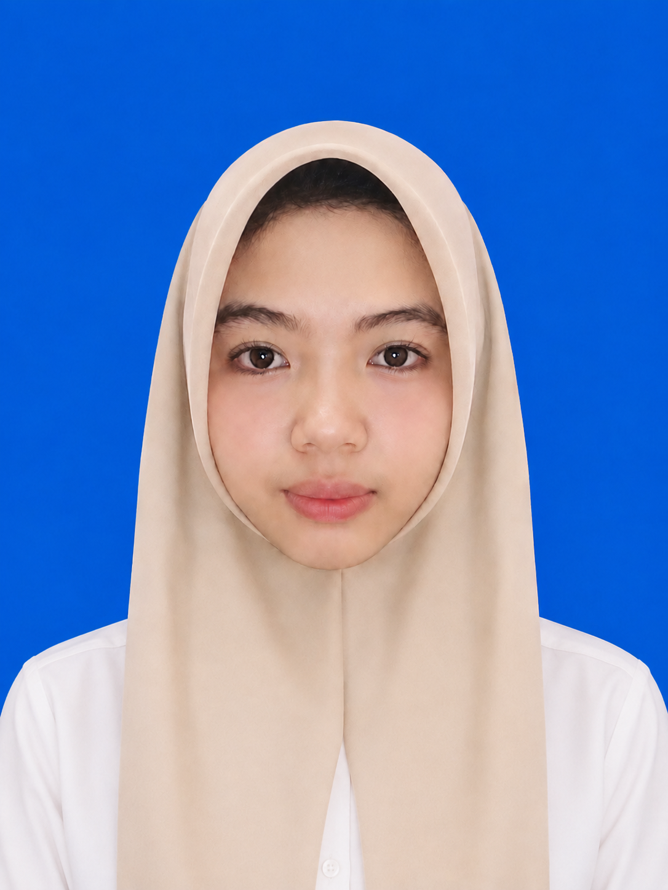

Hi, I'm Tina
Siswa jurusan Rekayasa Perangkat Lunak di SMKN 1 Semparuk. Sedang tekun mempelajari pemrograman web, logika aplikasi, dan konsep antarmuka digital.

Halo! Saya agustina, siswi kelas XII Rekayasa Perangkat Lunak (RPL) di SMKN 1 Semparuk. Saya memiliki rasa ingin tahu yang tinggi terhadap bagaimana sebuah aplikasi dan situs web dibangun.
Di sekolah, saya terus melatih pemahaman koding, alur logika sistem, serta merancang tampilan yang estetik dan nyaman bagi pengguna.
Contact MeEksplorasi dan bidang yang sedang saya kembangkan:
Membangun kerangka web yang rapi, responsif, dan nyaman dilihat di berbagai perangkat.
Mempelajari alur logika server, pemrosesan data, dan fungsionalitas sistem web.
Merancang konsep antarmuka visual yang estetik dan mudah dipahami.
Melatih pola pikir komputasional untuk menyelesaikan masalah lewat kode pemrograman.
Kumpulan tugas dan praktek sekolah di bidang pemrograman:
Eksplorasi tata letak visual, kombinasi estetika warna, dan antarmuka landing page responsif.
Aplikasi pengolahan data siswa (CRUD) berbasis desktop dengan antarmuka GUI yang terhubung ke database.
Latihan pembuatan web modern berbasis framework, menerapkan konsep MVC dan integrasi basis data dinamis.
Hal-hal yang sedang saya tekuni dan targetkan di jurusan RPL:
Fokus mempelajari alur kerja aplikasi web modern, pemisahan struktur program (MVC), dan manajemen basis data terarah.
Memasukkan materi-materi sekolah ke dalam praktik pembuatan web yang utuh, dinamis, serta siap diakses pengguna.
Melatih kepekaan tata letak, pemilihan warna, dan kerapian elemen web agar situs terasa nyaman saat digunakan.